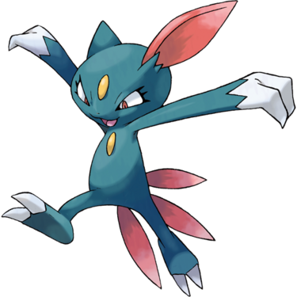
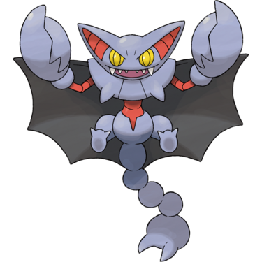
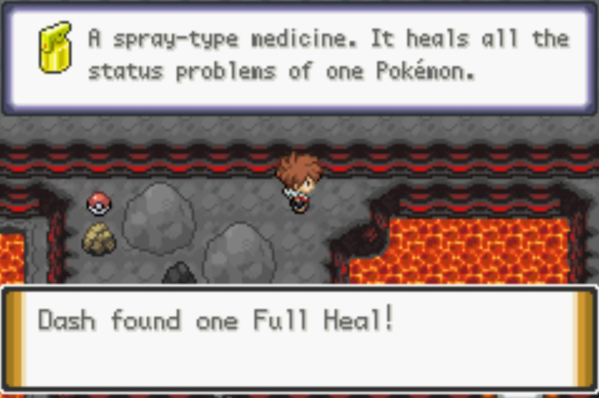
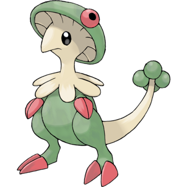

Quick Guide:
- Brave the Frozen Forest
- Confront the Burglar
- Battle a Crabominable
- Challenge the Blizzard City Gym
- Use HM06 Rock Smash to access KBT Expressway
- Break through to Failshore City
Frozen Forest
{kind=link}
| Points of Interest | |
|---|---|
 |
Crabominable Nest |
 |
Burglar Clearing |
 |
Blizzard City |
Items
| Items | |
|---|---|
| Zygarde Cell | |
| Snowball | |
|
Aguav Berry (hidden) |
|
| Ice Stone | |
Wild Pokémon
| Wild Pokémon | |
|---|---|
| Long Grass | |
|
Snover Grass/Ice Day and Night |
|
|
Cubchoo Ice Day and Night |
|
|
Sneasel Dark/Ice Night |
 |

You’re in Frozen Forest to look for a woman’s stolen Pokémon. There’s not much to do here except follow the path, with a couple of exceptions.
Just to the north of the entrance is a strange sight – the lair of a giant scary Crabominable, which you can get into by using Cut on the small trees. It’s asleep though, for now.
The only thing to do here to progress is take the west path and circle it around.
There aren’t any trainers waiting to challenge you, just the occasional patch of long grass.
Frozen Forest Ice Puzzle

Continue until you see a large patch of ice – this is an ice sliding puzzle.
Follow the instructions below to get to the other side:
- From the southernmost land tile, slide east onto the ice
- Slide down
- Slide right
- Slide up off the ice
- Obtain the Ice Stone
- Slide down back onto the ice
- Slide left
- Slide up
- Slide left
- Slide down
- Slide left
- Slide down
- Slide right
- Slide down and off the ice
You will land near the entrance to a clearing – this is where the missing Pokémon is.
The Missing Pokémon
As soon as you arrive in the clearing, the Burglar confronts you with the woman’s missing Alolan Ninetales, as well as his other Pokémon.
| Burglar Jett | |
|---|---|
|
Alolan Ninetales Ice/Fairy (Lv.27) |
|
|
Mightyena Dark (Lv.28) |
 |
After you beat him though, there’s a problem – the Crabominable has woken up and has decided to attack you!
| Pokémon Encounter | |
|---|---|
|
Crabominable Fighting/Ice (Lv. 32) |
|
Note: The Crabominable can be caught, and this is the only opportunity in this game for you to get one.
When you return to Blizzard City with the woman’s Alolan Ninetales, she gives you one of its Eggs as a reward. It will eventually hatch into an Alolan Vulpix.
| Egg Pokémon | |
|---|---|
|
Alolan Vulpix Ice (Lv.1) |
 |
Now that you’re back in town, it’s time to finally challenge the Gym and earn the right to use HM Rock Smash!
Blizzard Gym – Wings Badge

Blizzard City’s Gym is actually a Flying-type Gym, because it’s so high up.
Flying-type moves are super effective against Bug-, Fighting-, and Grass-type Pokémon, and Flying-type Pokémon are weak against Electric-, Ice-, and Rock-type moves.
Gym Trainers
| Gym Trainers | |
|---|---|
| Bird Keeper Wilton | |
|
Honchkrow Dark/Flying (Lv.27) |
 |
|
Pelipper Water/Flying (Lv.28) |
 |
| Bird Keeper Edwin | |
|
Trumbeak Normal/Flying (Lv.27) |
 |
| Bird Keeper Sebastian | |
|
Oricorio (Pa’u) Psychic/Flying (Lv.27) |
 |
|
Staravia Normal/Flying (Lv.28) |
|
| Bird Keeper Chester | |
|
Doduo Normal/Flying (Lv.27) |
 |
|
Murkrow Normal/Flying (Lv.27) |
 |
|
Oricorio (Pom-Pom) Electric/Flying (Lv.27) |
|
| Bird Keeper Perry | |
|
Swellow Normal/Flying (Lv.28) |
|
|
Swablu Normal/Flying (Lv.27) |
|
| Bird Keeper Robert | |
|
Starly Normal/Flying (Lv.28) |
 |
|
Pikipek Normal/Flying (Lv.28) |
 |
|
Spearow Normal/Flying (Lv.28) |
 |
The Gym is a series of lower corridors with fans that lead up to platforms on an upper floor. It’s a bit of a maze, and if you take a wrong turn at any point, you’ll have to fight an optional trainer.
From the Guide at the entrance, step on the fan directly behind him and you’ll be pushed up to a platform that goes in two directions.
Take the west one, and follow it around until you see a hole you can drop down to.
You’ll drop down in a room with another fan to the east and Bird Keeper Edwin blocking your way.
Once you beat him, walk on the east fan and you’ll be on the upper level again.
Ignore the hole next to the one you came from and walk north to challenge Bird Keeper Sebastian.
The path he is on leads to another lower chamber and another fan, which you should follow.
Once you use that next fan, follow the long upper path along until Bird Keeper Perry sees you.
After him, drop down the next hole you see, cross the lower chamber to another fan, and you’ll be in one final upper level corridor.
Bird Keeper Robert is the last trainer you’ll have to beat to get to the Gym Leader. So once you’ve done that just follow the path and head north and drop down to find yourself in her room.
Blizzard City Gym Leader – Alice
Alice is a graceful figure, but she doesn’t waste much time before challenging us.
| Gym Leader Alice (Vanilla) | |
|---|---|
|
Doduo Normal/Flying (Lv.29) |
|
|
Gliscor Ground/Flying (Lv.28) |
 |
|
Minior Fire/Flying (Lv.30) |
|
Her team is formidable – if you’ve been relying on Electric-type moves to take down all the Pokémon in this Gym, her Gliscor will give you a rude shock. It’s best to use an Ice move on it.
The Wings Badge is your reward after winning, as is TM40 Aerial Ace.
After You Win
After you beat her, head outside and Alice says she still needs to speak to you about something.
With her Gliscor using Rock Smash, Alice breaks through the barrier Ivory put up on the KBT Expressway Entrance and tells you that you can use Rock Smash now with her permission.
Your new objective is to travel to Fallshore City through the KBT Expressway, but there may be a couple things to take care of first.
Tip: Go back to Alice and she’ll ask you to collect 20 Pretty Wings from Wingull or Pelipper – it’s an item they all hold, but unless you capture each one, you’ll need to use a move such as Knock Off or Thief to get them. If you manage to do this, you’ll get a Power Anklet.
Optional: Rock Smash Backtracking
Now that you’re allowed to use it, Rock Smash will be very useful to you.
Before heading into the KBT Expressway, you may want to backtrack to previous routes to get a few optional items:
| Rock Smash Backtracking Locations | |
|---|---|
| Frozen Forest | |
| PP Up | |
| Route 7 | |
|
Shiny Stone (hidden) |
|
| Valley Cave B1F | |
| Heart Scale | |
| Razor Fang | |
| Icicle Cave 3F | |
| Nevermeltice | |
| Rare Candy | |
| Frozen Heights | |
| Dawn Stone | |
| Cinder Volcano 3F East | |
| Quick Ball | |
| Full Heal |  |
| Fire Stone | |
| Cinder Volcano 2F West | |
| Burn Heal | |
| Nugget | |
|
Fire Gem (defeat Ace Trainer Alexa) |
|
| Ace Trainer Alexa | |
|---|---|
|
Breloom Grass/Fighting (Lv.30) |
 |
|
Gardevoir Psychic/Fairy (Lv.31) |
 |
|
Magmar Fire (Lv.30) |
 |
|
Sealeo Ice/Water (Lv.31) |
 |
|
Florges Fairy (Lv.31) |
 |
Return to KBT Expressway
When you’re ready, head into the KBT Expressway.
You’ll see a man in this section of the tunnel – he’s another Gem Family member with a trade for you. There are two more that are accessible to you right now, as well:
| Gem Family Move Shops – Part 2 | ||
|---|---|---|
|
Flying Brave Bird 4 Flying Gems |
Near the Blizzard City Entrance | |
|
Ghost Poltergeist 4 Ghost Gems |
Along the Fallshore City Tunnel | |
|
Normal Body Slam 3 Normal Gems |
Along the Fallshore City Tunnel | |
To access the rest of the Expressway, smash your way through the rocks to the east.
Make your way through the Expressway to Crater Town, and head to the south exit.
This time, you won’t be jumped by Shadow Grunts.
You can now clear the barrier to the south of this tunnel. Head for the Fallshore City exit.
Once you find it, head outside and you’ll find yourself in Fallshore City.

The first thing you’ll see as you exit is Jax, who is trying to beat Ivory in a battle again. It doesn’t work out well for him.
Once that’s over with, it’s time to explore Fallshore City.